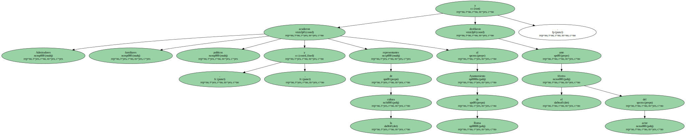
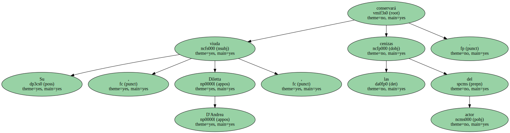
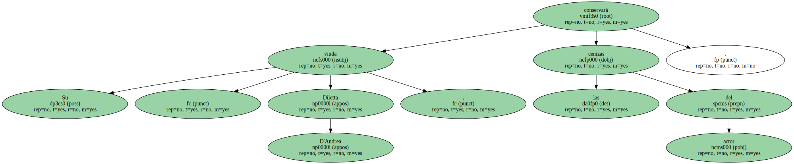

El telón cayó ayer para ese gran mito del teatro y el cine europeos que fue Vittorio Gassman y miles de italianos quisieron ovacionar su última función.

Admiradores , familiares , políticos y representantes de la cultura acudieron al Ayuntamiento de Roma y desfilaron ante el féretro del actor.
Hoy , tras el funeral religioso , será incinerado.
Miles de personas desfilaron ayer ante el féretro del actor en el Ayuntamiento de Roma.
Fueron las últimas ovaciones.
El féretro de Vittorio Gassman fue recibido entre aplausos de miles de italianos que , dos horas antes de que se abrieran las puertas del Ayuntamiento de Roma , estaban ayer por la mañana en la calle para rendir homenaje al mítico actor fallecido el Jueves.

El féretro de Vittorio Gassman fue recibido entre aplausos de miles de italianos que , dos horas antes de que se abrieran las puertas del Ayuntamiento de Roma , estaban ayer por la mañana en la calle para rendir homenaje al mítico actor fallecido el Jueves.
El féretro de Vittorio Gassman fue recibido entre aplausos de miles de italianos que , dos horas antes de que se abrieran las puertas del Ayuntamiento de Roma , estaban ayer por la mañana en la calle para rendir homenaje al mítico actor fallecido el Jueves.
El féretro de Vittorio Gassman fue recibido entre aplausos de miles de italianos que , dos horas antes de que se abrieran las puertas del Ayuntamiento de Roma , estaban ayer por la mañana en la calle para rendir homenaje al mítico actor fallecido el Jueves.
Algunos llevaban ramilletes de flores ( que acabaron mustias por el calor ) en las manos y la mayoría desfiló ante el ataúd que fue colocado en la sala Promoteca.
Algunos llevaban ramilletes de flores ( que acabaron mustias por el calor ) en las manos y la mayoría desfiló ante el ataúd que fue colocado en la sala Promoteca.

Algunos llevaban ramilletes de flores ( que acabaron mustias por el calor ) en las manos y la mayoría desfiló ante el ataúd que fue colocado en la sala Promoteca.
Algunos llevaban ramilletes de flores ( que acabaron mustias por el calor ) en las manos y la mayoría desfiló ante el ataúd que fue colocado en la sala Promoteca.
Algunos niños lloraron , algunas personas se desmayaron , y fueron muchos los representantes de la cultura que , pensativos , acudieron a la última cita con il mattatore , el protagonista absoluto del escenario.
También muchos habitantes de la periferia se trasladaron hasta el antiguo capitolio de los Césares para despedir a uno de los últimos mitos de la escena y del cine italianos.
Alberto Sordi observó desde un rincón , silencioso y desencajado , el cadáver del actor , al que vistieron con un traje oscuro y una corbata con ballenas amarillas.
En las manos le colocaron un ejemplar del libro Rosario del siglo XXI.
Tres girasoles , su flor preferida , y el escrito " Ciao amore , Diletta " acompañó el ataúd junto a una corona de rosas rojas de sus cuatro hijos , que compartieron espacio con las numerosas flores y notas con todo tipo de mensajes que los visitantes dejaron a su paso.
Vittorio Gassman murió solo , el miércoles por la noche , durante el sueño , a causa de una crisis cardiaca y sin que hubiera nunca sufrido de corazón.
¿ Su última representación ?.
A la mente de muchos viene uno de sus muchos lamentos : " La primera vida sirve para ensayar y la segunda para recitar ".
Stefania Sandrelli , compañera de plató y de aventuras de Gassman , tocó el féretro y cayó casi desvanecida al suelo , estallando en sollozos.
" La vida es un milagro " , murmuró el octogenario Alberto Sordi , tomando del brazo al presidente de la República , Carlo Azeglio Ciampi , que con su esposa rindió tributo al ex lector oficial de la Divina Comedia.
" Tu padre era el más grande , pero era también uno de nosotros " , comentó una anónima anciana , ama de casa y ex aspirante a actriz , mientras estrechó la mano de Alessandro , el hijo más conocido de Gassman.
" Echaré de menos al maestro , pero sobre todo me faltará mi padre " , dijo él , también actor y fruto de la unión de Gassman con la actriz Juliette Maynel.
" Le dedicaré mi tesis de licenciatura " , afirmó un estudiante de teatro.
Hubo más jóvenes que ancianos en la interminable procesión que subió , ordenada y en silencio , las escaleras diseñadas por Miguel Angel para alcanzar el primer templo del Imperio , allí donde estaba situado el ombligo del mundo , tantas veces proclamado por el Gassman teatral cuando hablaba de Roma.
Quizás la canícula no invitó a que los adultos despidieran a los muertos , lo cual debió divertir mucho a Gassman , que frecuentaba a los jóvenes a los que miraba con curiosidad y nostalgia.
" Volvería , sí , volvería a los 20 años " , había confesado.
Hoy , tras el funeral en la Iglesia San Gregorio al Celio , el cuerpo de Gassman será incinerado.
Su viuda , Diletta D'Andrea , conservará las cenizas del actor.
El alma del teatro y el cine europeo seguirá viva en su recuerdo.